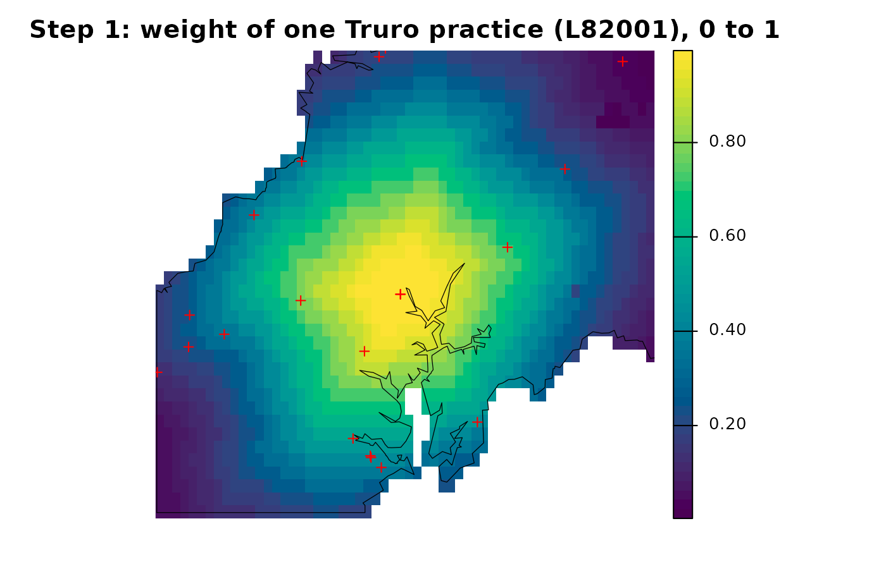
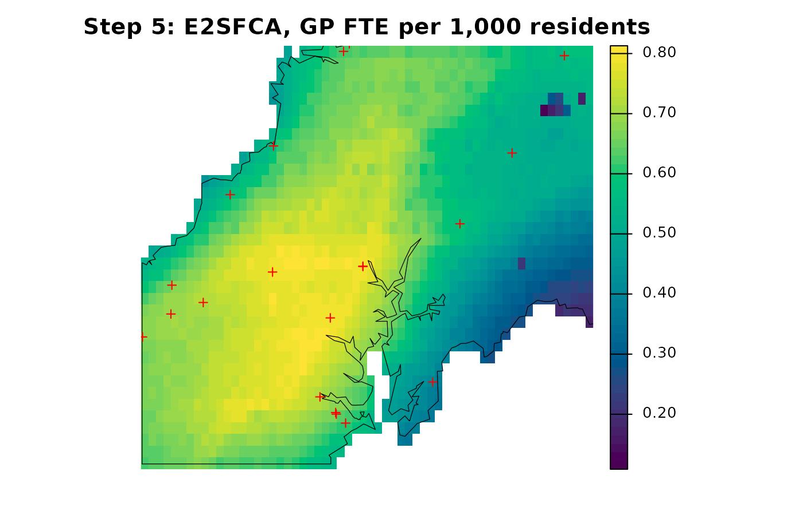

This guide uses the bundled Cornwall GP data, described in The Cornwall GP example data.
An FCA calculation has two kernels: one decides how much demand each facility gathers, the other spreads each facility’s supply-to-demand ratio back to origins. Let demand at cell be , supply at practice be , and the demand-side and access-side weights be and . Then
This guide rebuilds the E2SFCA surface of Getting
started one step at a time and checks each step against
spax_e2sfca(), with the same inputs and the same 10-minute
Gaussian decay. The calculation covers all of mainland Cornwall; the
maps zoom in on the area around Truro so that individual cells stay
visible.
pop <- read_spax_example("cornwall_pop.tif")
travel <- read_spax_example("cornwall_gp_travel.tif")
# Mainland only, as in the other guides
gp <- cornwall_gp |>
filter(!scilly) |>
st_drop_geometry()
travel <- travel[[gp$practice]]
pop <- trim(mask(pop, sum(travel)))
travel <- crop(travel, pop)
# GP FTE named by practice code
supply <- setNames(gp$gp_fte_extg, gp$practice)
# Map helper: a layer within the Truro display window, with practices
truro <- ext(-5.30, -4.80, 50.12, 50.42) # display window only
practices <- cornwall_gp |>
filter(!scilly) |>
st_transform(crs(pop)) |>
vect()
show <- function(x, title) {
plot(
crop(x, truro),
axes = FALSE,
main = title,
col = hcl.colors(50, "viridis")
)
points(crop(practices, truro), pch = 3, col = "red")
}Step 1: decay weights
With Gaussian decay,
,
where
is the travel time. We use
minutes, a choice rather than an estimate. calc_decay()
works on plain numbers and on rasters alike.
# The weight left after a few travel times
minutes <- c(0, 5, 10, 15, 20, 30)
kernel <- calc_decay(minutes, method = "gaussian", sigma = 10)
round(setNames(kernel, minutes), 3) 0 5 10 15 20 30
1.000 0.882 0.607 0.325 0.135 0.011
# The same decay applied to every travel layer
weights <- calc_decay(travel, method = "gaussian", sigma = 10)
show(
weights[["L82001"]],
"Step 1: weight of one Truro practice (L82001), 0 to 1"
)
Each practice has one weight layer. The map shows the layer for a practice in central Truro (the red crosses are practices): the weight is close to 1 near it and fades with travel time. The shape follows the travel-time surface, not straight-line distance; the gaps are estuaries.
Step 2 (optional): normalize the demand-side weights
The weights of all practices at one cell need not sum to 1. Where
many practices are close, each of them counts the same resident.
calc_normalize() offers alternatives:
"standard" divides each cell’s weights by their sum, and
"semi" does so only where the sum exceeds 1.
# Sum of all practices' weights at each cell
row_sum <- function(w) values(sum(w), mat = FALSE)
probs <- c(0.05, 0.5, 0.95)
standard <- calc_normalize(weights, method = "standard")
semi <- calc_normalize(weights, method = "semi")
# Cell quantiles of those sums, before and after normalizing
round(
rbind(
identity = quantile(row_sum(weights), probs, na.rm = TRUE),
standard = quantile(row_sum(standard), probs, na.rm = TRUE),
semi = quantile(row_sum(semi), probs, na.rm = TRUE)
),
2
) 5% 50% 95%
identity 1.23 3.96 9.06
standard 1.00 1.00 1.00
semi 1.00 1.00 1.00In mainland Cornwall the weights at the median cell sum to about 4,
and even the 5th percentile is above 1, so "standard" and
"semi" give almost the same result here and both differ
from "identity". The choice changes the demand each
practice gathers and so the index: normalization is a model choice, not
a correction. In spax_e2sfca() the
demand_normalize argument applies it to the demand side
only. We keep "identity", so
.
Step 3: gather demand to practices
gather_weighted() sums demand times weight over all
cells for each practice:
.
With simplify = TRUE it returns a vector named by the
weight layers.
load <- gather_weighted(
values = pop,
weights = weights,
simplify = TRUE # one named value per practice
)
stopifnot(identical(names(load), gp$practice))Step 4: supply-to-demand ratios
Each practice’s ratio is its supply over the demand it gathered,
.
Index supply by the names of load, not by position.
ratio <- supply[names(load)] / load
# Supply, gathered demand and ratio for six practices near Truro
near_truro <- c("L82001", "L82028", "L82015", "L82061", "L82045", "L82048")
data.frame(practice = near_truro) |>
left_join(select(gp, practice, name), by = "practice") |>
mutate(
gp_fte = round(supply[practice], 1),
weighted_residents = round(load[practice]),
fte_per_1000 = round(1000 * ratio[practice], 2)
) practice name gp_fte weighted_residents fte_per_1000
1 L82001 LANDER MEDICAL PRACTICE 10.3 95347 0.11
2 L82028 THREE SPIRES MEDICAL PRACTICE 10.3 95347 0.11
3 L82015 CHACEWATER HEALTH CENTRE 3.7 105955 0.04
4 L82061 CARNON DOWNS SURGERY 5.3 100581 0.05
5 L82045 PROBUS SURGERY 6.6 71415 0.09
6 L82048 ROSELAND SURGERIES 3.3 42552 0.08The ratios look small because, with identity weights, each resident is counted by several practices; step 5 adds them back up. The two central Truro practices share one site, so they gather the same demand.
spax_e2sfca() uses a ratio of zero for a practice whose
gathered demand is zero. That is a computational convention, not
evidence of anything; with Gaussian weights every practice here gathers
some demand, so it is not used.
Step 5: spread the ratios back to cells
spread_weighted() multiplies each practice’s ratio by
its weight layer and sums over practices:
.
It matches values to layers by position, so pass the ratios in layer
order.
# Ratios in layer order, without names: matching is by position
access <- spread_weighted(
values = unname(ratio[names(weights)]),
weights = weights
)
show(1000 * access, "Step 5: E2SFCA, GP FTE per 1,000 residents")
A cell’s index is a sum of contributions from every practice. For the cell containing the central Truro practice, the largest contributions are:
# The grid cell that contains practice L82001
site <- geom(practices[practices$practice == "L82001", ])
cell <- cellFromXY(pop, site[, c("x", "y"), drop = FALSE])
# Each practice's contribution: its weight at the cell times its ratio
w_cell <- unlist(extract(weights, cell))
parts <- sort(1000 * w_cell * ratio[names(w_cell)], decreasing = TRUE)
round(
c(
head(parts, 5),
all_others = sum(parts[-(1:5)]),
total = sum(parts)
),
3
) L82028 L82001 L82045 L82006 L82061 all_others total
0.108 0.107 0.067 0.048 0.047 0.417 0.794 Check against the packaged functions
The step-by-step surface, the spax_e2sfca() wrapper, the
more general compute_access() and a plain matrix
calculation all agree:
# The packaged wrapper
e2sfca <- spax_e2sfca(
demand = pop,
supply = gp,
distance = travel,
decay_params = list(method = "gaussian", sigma = 10),
demand_normalize = "identity",
id_col = "practice",
supply_cols = "gp_fte_extg"
)
# The general function, with the same weights on both sides
general <- compute_access(
demand = pop,
supply = supply,
demand_weights = weights,
access_weights = weights
)
# The same formula with plain matrices: cells in rows, practices in columns
W <- values(weights)
D <- values(pop, mat = FALSE)
ok <- !is.na(D)
manual <- rep(NA_real_, length(D))
manual[ok] <- drop(W[ok, ] %*% (supply / colSums(W[ok, ] * D[ok])))
# All three surfaces match the matrix calculation, and so do the loads
for (answer in list(access, e2sfca$accessibility, general)) {
stopifnot(isTRUE(all.equal(
values(answer, mat = FALSE),
manual,
tolerance = 1e-10,
check.attributes = FALSE
)))
}
stopifnot(isTRUE(all.equal(
drop(load),
colSums(W[ok, ] * D[ok]),
check.attributes = FALSE
)))The check verifies this calculation with these inputs; it does not make different accessibility models equivalent.
Why the calculation covers the whole mainland
Cropping the inputs to the Truro window before calculating would be quicker, but every practice, including those outside the window, would then gather only the demand inside it.
# Calculate on the Truro window only
cropped <- spax_e2sfca(
demand = crop(pop, truro),
supply = gp,
distance = crop(travel, truro),
decay_params = list(method = "gaussian", sigma = 10),
demand_normalize = "identity",
id_col = "practice",
supply_cols = "gp_fte_extg"
)
# Compare with the full calculation over the same cells
in_window <- values(crop(e2sfca$accessibility, truro), mat = FALSE)
relative <- values(cropped$accessibility, mat = FALSE) / in_window - 1
round(quantile(100 * relative, c(0, 0.5, 1), na.rm = TRUE), 1) 0% 50% 100%
15.5 54.5 4980.0 These are percentage differences between the cropped and the full calculation for cells in the window. Every cell’s index rises: by about half at the median and about fifty-fold at the worst cell, on the window’s edge, which picks up practices outside the window whose small remaining demand gives them very high ratios. Calculate on the full study area and crop only for display.
Change the access-side weights
spax_m2sfca() keeps
on the demand side but uses
on the access side, so
and
.
is below
except at zero travel time, and far below it for distant practices, so
M2SFCA discounts cells whose practices are far away. The same matrix
formula reproduces it:
m2sfca <- spax_m2sfca(
demand = pop,
supply = gp,
distance = travel,
decay_params = list(method = "gaussian", sigma = 10),
demand_normalize = "identity",
id_col = "practice",
supply_cols = "gp_fte_extg"
)
# M2SFCA by hand: squared weights on the access side only
m2_manual <- rep(NA_real_, length(D))
m2_manual[ok] <- drop(W[ok, ]^2 %*% (supply / colSums(W[ok, ] * D[ok])))
stopifnot(isTRUE(all.equal(
values(m2sfca$accessibility, mat = FALSE),
m2_manual,
tolerance = 1e-10,
check.attributes = FALSE
)))Comparing FCA methods maps E2SFCA, 2SFCA, M2SFCA, 3SFCA and Huff-2SFCA side by side and explains why only M2SFCA loses part of the supply. None of these indices is a fitted statistical model. An allocation model instead defines choice probabilities with an outside option; see Choosing an FCA index or an allocation model.